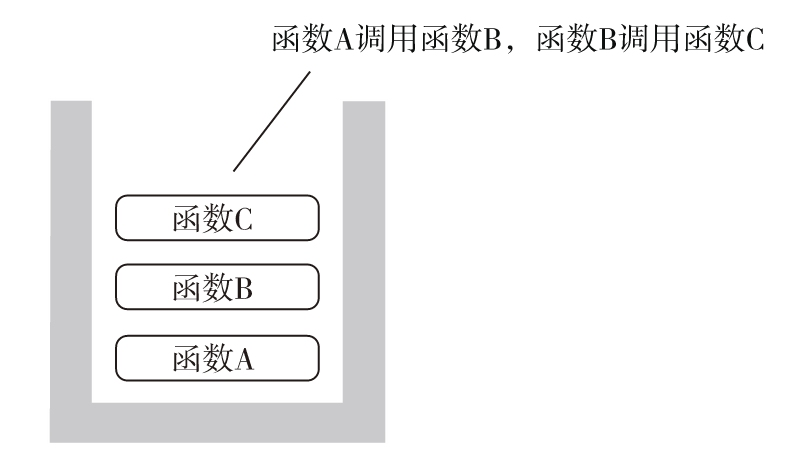
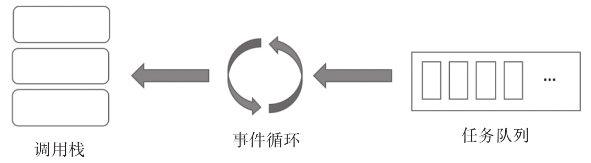
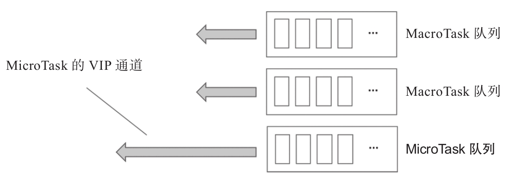

JavaScript的解析和运行环境称为“JavaScript引擎”，JavaScript引擎有诸多实现，Chrome浏览器和Node.js使用的是v8，微软公司的Edge浏览器使用的是Chakra引擎 [1] ，Firefox浏览器在演进道路上使用过Gecko、TraceMonkey和JagerMonkey等多种引擎 [2] 。历史上，不同组织和个人开发过各种名称的JavaScript引擎，虽然这些引擎种类繁多，但是都要实现“调用栈”（Call Stack）和“事件循环”（Event Loop）的概念。
“调用栈”是所有编程语言都存在的概念，当调用一个函数的时候，就在调用栈上创建这个函数运行的空间，参数的传递、局部变量的创建都是通过调用栈完成；当一个函数执行完毕的时候，对应调用栈上这个函数的本次运行空间就被清除。
实际情况下，一个函数可能调用其他函数，而这些其他函数又会调用更多的函数，所以调用栈随着函数调用的深入会不断加深，然后又随着这些函数调用结束而变浅。图11-1是一个调用栈的状态去描述，函数A调用了函数B，然后函数B调用了函数C。

图11-1 调用栈
调用栈的执行方式很适合简单的数据运算，不过，JavaScript被设计出来不是只执行一个任务，作为开发网页应用的语言，JavaScript需要对多种不同的事件进行响应，所以，就有了“事件循环”这个概念。
当使用setTimeout或者setInterval来控制一个函数在一段时间之后再执行的时候，当通过fetch等API发出AJAX请求的时候，当使用Promise对象的时候，“事件循环”就上场了。

图11-2 事件循环的工作方式
虽然“事件循环”在各JavaScript引擎中的具体实现方式有差别，但基本都是这样的工作方式。
为了支持事件处理，需要有一个“事件队列”，存储所有等待处理的事件，这些事件有很多来源，上面提到的使用setTimeout和setInterval、调用AJAX功能的API、使用Promise都可以给“事件队列”添加待处理事件。
“事件循环”可以看作一个死循环，重复的工作就是从“事件队列”中拿到需要处理的事件任务，然后把这个任务交给调用栈去执行，当这个任务处理结束之后，再从“事件队列”中拿下一个任务塞给调用栈……如此周而复始，永不停歇。
因为JavaScript是单线程执行，所以当调用栈正在执行一个任务的时候，事件循环也只能等着，只有当前一个任务完成之后，才能塞给调用栈下一个任务。这也就是setTimeout不可能百分之百准确的原因。假设setTimeout设定1000毫秒之后执行一个任务，即使系统时钟无比准确，但是1000毫秒之后，有一个任务正在调用栈中执行，那setTimeout设定的任务也不可能强行中断正在执行的任务，只能等到它完成之后才排上队，这时候很可能已经是多于1000毫秒之后的时间了。
所以，在JavaScript编程中，要特别注意的是让每个任务不要耗时太长，要知道，不光JavaScript的任务要在唯一的线程上执行，浏览器窗口渲染HTML内容、响应用户输入也要用上这个唯一的线程，如果单个任务耗时太长，必定造成卡顿，影响用户体验。
上面是为了便于理解，简单介绍“事件循环”和“事件队列”，其实实际情况并没有那么简单。更进一步，“事件队列”中的任务可以细分为Micro Task和Macro Task。
如果把“事件队列”看作是等待执行而排队的话，那实际上也不只是排一条队，虽然各个JavaScript引擎的实现不同，但是都会把不同任务区分对待，比如，setTimeout和setInterval和时间相关任务排一队，网络请求相关任务排一队，当调用栈终于空闲下来的时候，“事件循环”会依次一个队一个队地处理，比如，上一次处理到setTimeout和setInterval这样与时间相关的这一队，那就接着从这个队列里抽取任务完成，搞定这一队之后，再去网络请求相关任务队列去拿任务，搞定之后再找下一队。
可见，每一个队列里的任务想要获得执行，不光要等自己队列里前面的任务，还可能要等待其他队列被清空才有机会。
上面说的这些任务，叫做Macro Task，还有一种任务，叫做Micro Task，处理方式和Macro Task很不一样。
概念上，Micro Task只有一个队列，而且这个队列简直就是VIP快速通道。

图11-3 Micro Task和Macro Task
当调用栈处理完一个任务，准备迎接下一个任务的时候，“事件循环”总是会优先看一看Micro Task的队列，只要还有Micro Task存在，就直接把Micro Task交给调用栈，其他Macro Task队列的任务都只能等下次机会。因为Micro Task的处理优先级很高，所以更应该保证Micro Task的运算量不能太大，不然这种又强行插队又耗时的行为，肯定会造成应用感知性能的下降。
在JavaScript中，setTimeout、setInterval和AJAX请求引发的异步操作，都属于Macro Task，但是对于Micro Task，不同的JavaScript引擎有不同的定义。在Node.js环境中，process.nextTick将会产生Micro Task任务，参照下面的代码：
setTimeout(
() => console.log('setTimeout'),
0
);
process.nextTick(() => console.log('nextTick'));
在Node环境下，这个代码的输出如下：
nextTick setTimeout
虽然setTimeout语句执行在前，但它产生的是Macro Task，而process.nextTick产生的是Micro Task，所以它在事件循环处理时会插在前面先被处理，于是最后的nextTick输出在setTimeout之前。
在某些JavaScript引擎中，Promise被当做Micro Task处理，但是也有JavaScript引擎不这么认为，所以，下面的代码在不同浏览器中会产生不同的结果：
setTimeout(
() => console.log('setTimeout'),
0
);
Promise.resolve(1).then(() => console.log('Promise.resolve'));
这段代码在有的浏览器中的运行结果可能是下面这样：
Promise.resolve setTimeout
也可能是下面这样：
setTimeout Promise.resolve
所以，不能认为Promise一定会产生Micro Task，实际情况是不同JavaScript引擎的处理会有不同。
[1] 参见https://en.wikipedia.org/wiki/Chakra_(JavaScript_engine)。